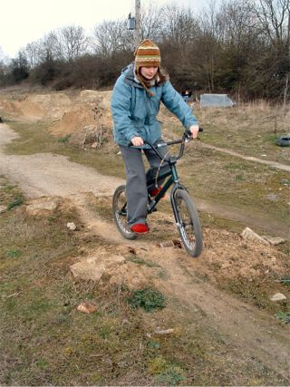 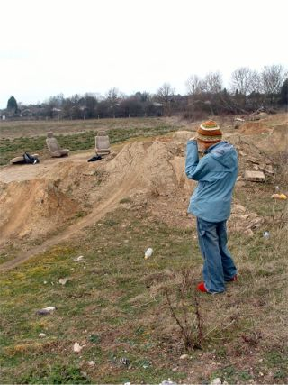 becky took all these pictures. she also did some riding and even busted some phat air out of the manual bumps. 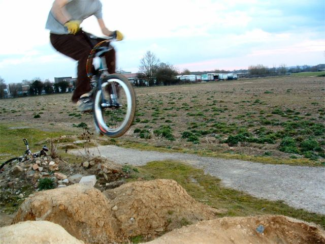 the trails were dry all weekend so this marks the beginning of spring. the clock went forward and stuff which is the start of british summer time. and i was on my new bike so it's all fun and games. 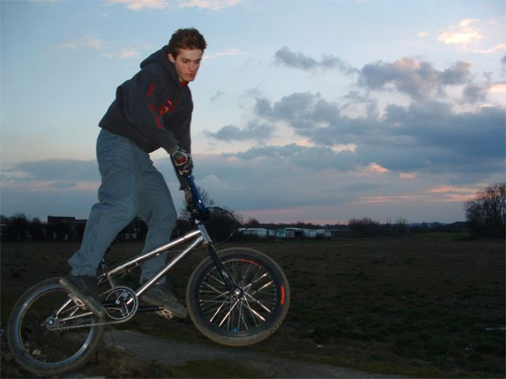 tim's arm is still a bit dodgy after he broke it so he wasn't sure about riding the big line but he did it in the end risking breaking it again, but it turned out ok. it stopped him from doing too much though because he can't risk falling off. 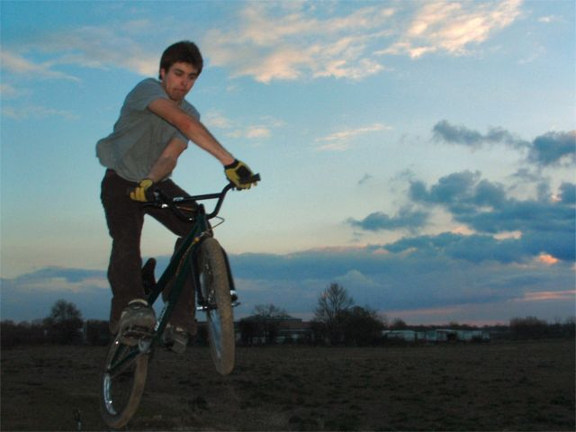 i just practiced riding trails again and trying some stunts. stunts are much easier on at trampoline than on dirt so i was having a lot of trouble with everything as you can see. 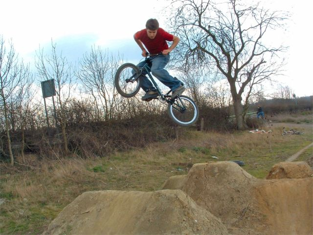 i had invited a few people over but in the end no-one else turned up but it was ok. maybe it's cos i said the jumps give you cancer. 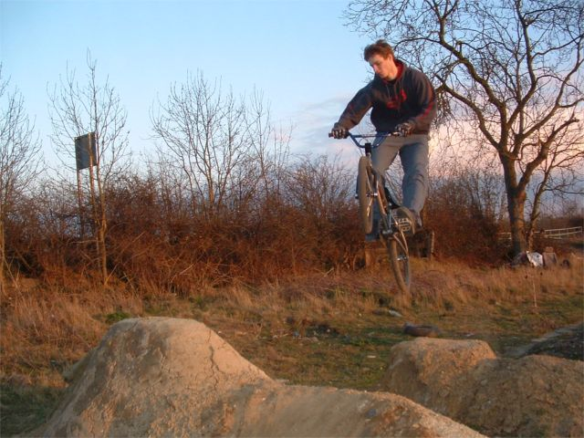 after i wrote that i saw what yak put on my book. i guess trampolines do help a bit. you learn what you have to do, but it doesn't make actually doing it any easier. 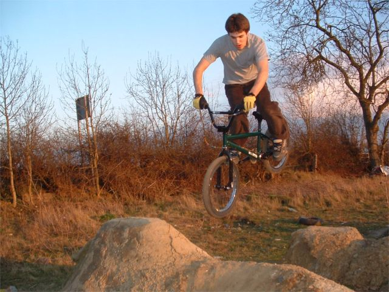 i learnt front wheel grabs last night. it was fun but the batteries had run out on the camera by then. 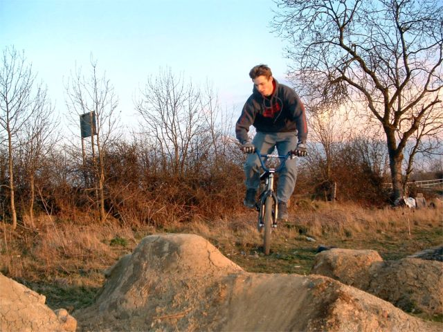 i reckon these pictures look pretty good. simon showed me the one step photo fix on jasc paintshop pro and it makes all your pictures look like trailscene. or maybe not like trailscene but anyway it makes the shadows nice.  errm well i have run out of stuff to write. i can't even think of any injokes or anything. no captions makes the internet dull. 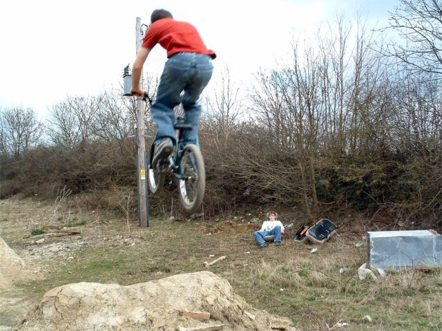 i am writing this at work straight onto notepad so i can't see the pictures. someone at work wants me to maintatain a load of website which would be good. makes my life more interesting. 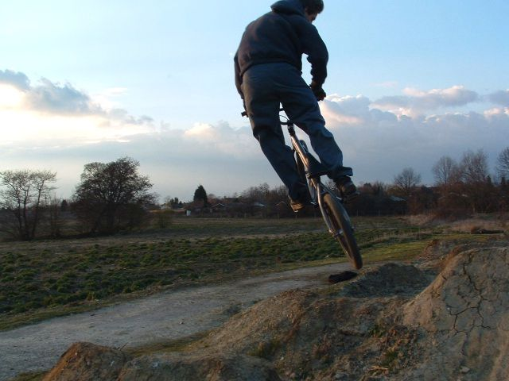 it's good now the trails are dry. having trails near you house means you can ride everyday which is what it's all about. i just ride round and round until i am too tried. you can tell whne you are too tried cos your legs start hurting on the run up and you catch your backwheel like a bad boy. then it's time to stop for a break 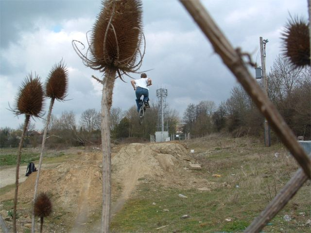 i ripped the old car seats out of my dead car and dropped them off at the trails so you should be able to see them in the photos. they smell of dogs which is loverly. 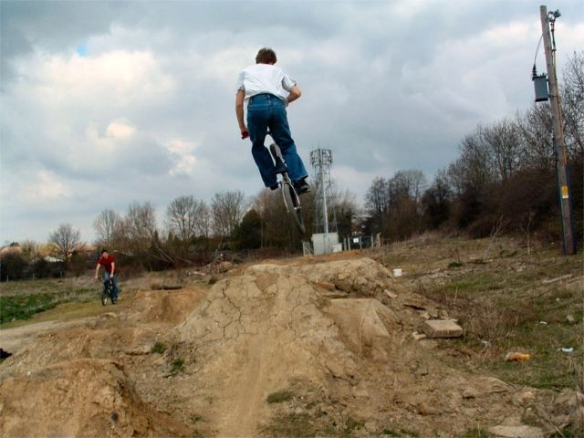 i have run out of captions and tim didn't do them like he said he would so it's boring from here on in 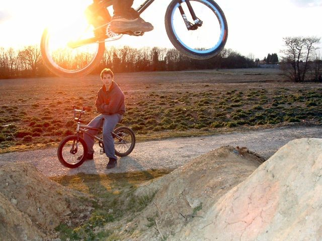 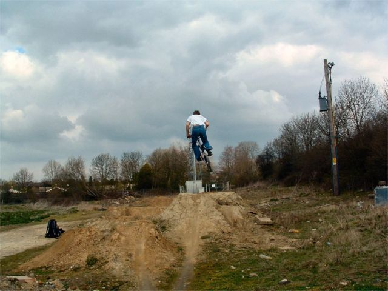 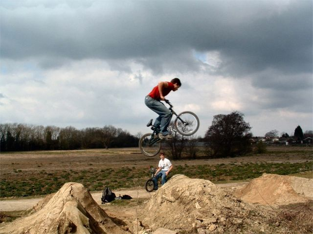 some weird kickout/griz type thing.  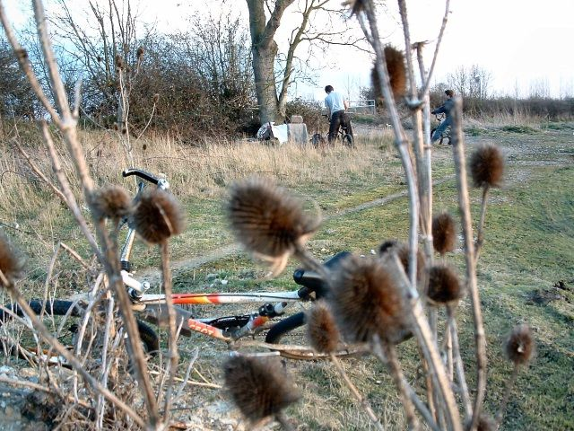  an ok table for a change 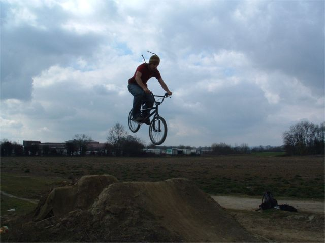 me bringing becky her hat 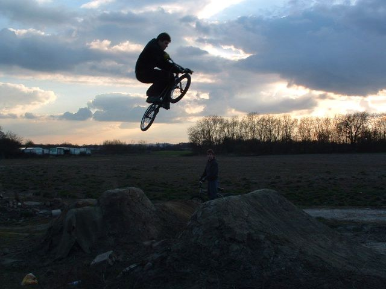 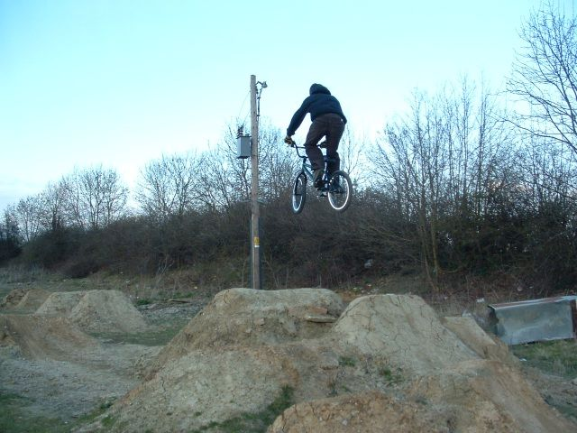 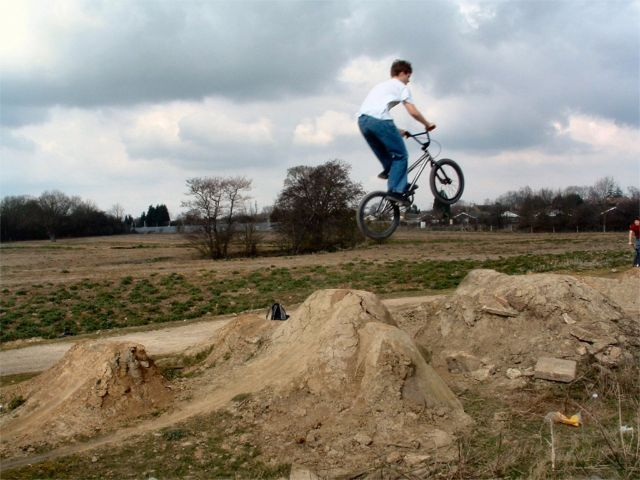 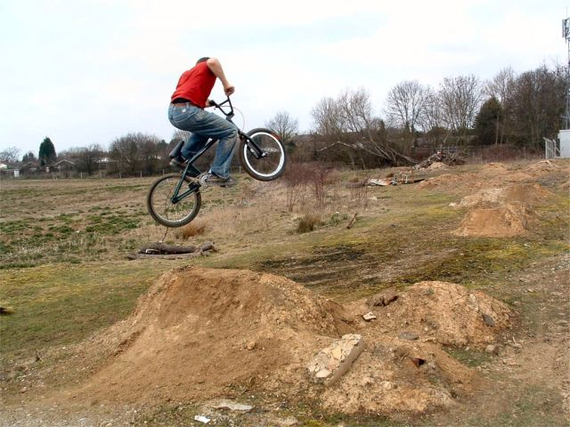 volcano/spine. these pictures must have been taken a different day because of the file name. i think probably saturday morning, which means they are all dark. 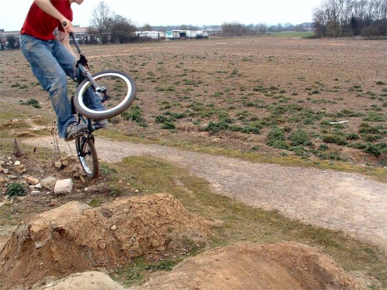 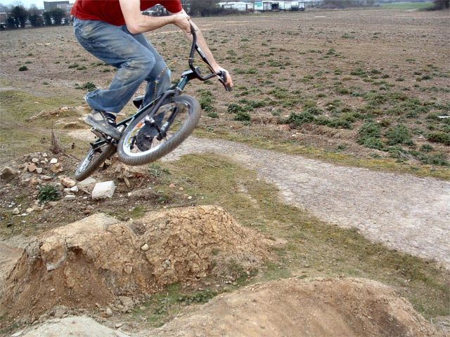 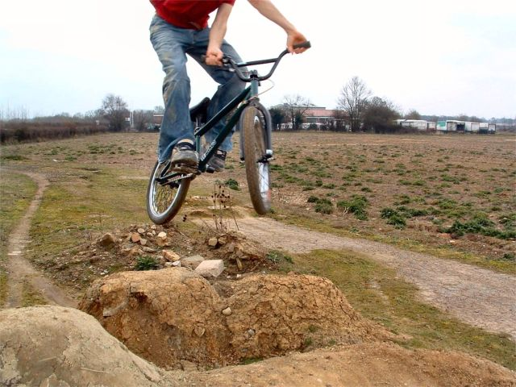 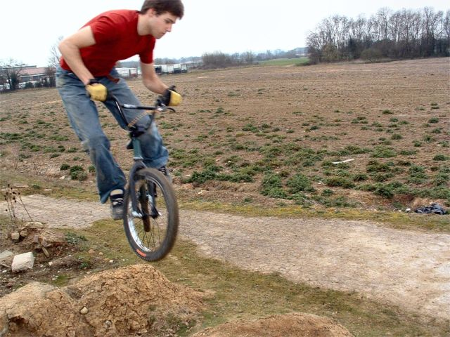 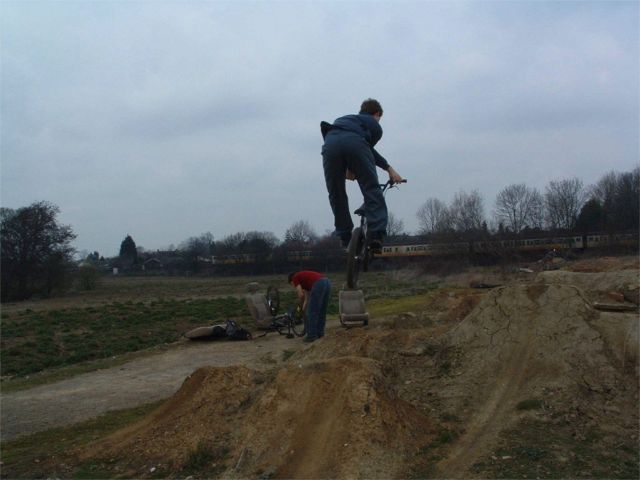 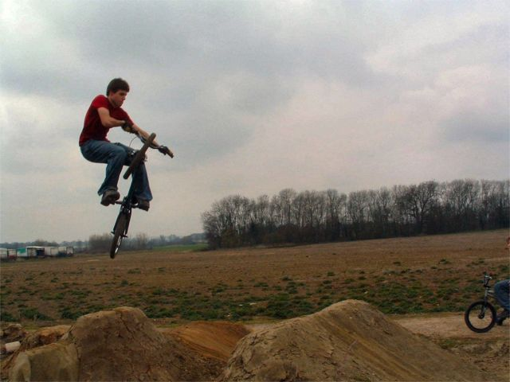 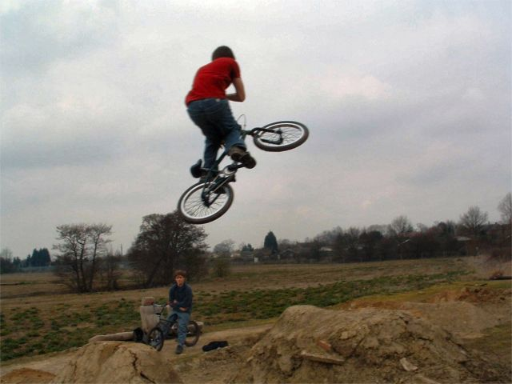 more pictures of boring tables. |